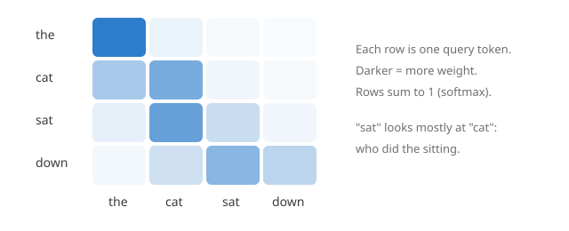

Attention, step by step
How a transformer decides which earlier words matter, in one formula and a small picture.
The idea
Every token in a sequence asks a question of every other token: how relevant are you to me right now? Attention turns those questions into weights, then mixes the tokens' information using those weights. The result is a new vector for each token that blends in what it needs from the rest of the sequence.
The formula
Each token is projected into a query \(q\), a key \(k\) and a value \(v\). Stacking them for all tokens gives matrices \(Q\), \(K\) and \(V\), and attention is
\[ \mathrm{Attention}(Q, K, V) = \mathrm{softmax}\!\left(\frac{QK^{\top}}{\sqrt{d_k}}\right) V \]
The scores \(QK^{\top}\) measure how well each query matches each key. Dividing by \(\sqrt{d_k}\) keeps the scores from growing with the key dimension \(d_k\), which would push the softmax into near one-hot outputs and make gradients vanish. The softmax turns each row of scores into weights that sum to one.

Multiple heads
One attention pattern can only capture one kind of relationship at a time. Multi-head attention runs \(h\) attention functions in parallel on smaller projections, \(d_k = d_{\text{model}}/h\), and concatenates their outputs, so one head can track syntax while another tracks coreference.
The cost of attention grows with the square of the sequence length, \(O(n^2 d)\), because every token scores every other token.
In code
import torch, math
def attention(q, k, v, causal=True):
scores = q @ k.transpose(-2, -1) / math.sqrt(q.size(-1))
if causal:
n = q.size(-2)
mask = torch.triu(torch.ones(n, n, dtype=torch.bool), 1)
scores = scores.masked_fill(mask, float("-inf"))
weights = scores.softmax(dim=-1)
return weights @ vThe causal mask sets future positions to minus infinity before the softmax, so their weights become exactly zero.